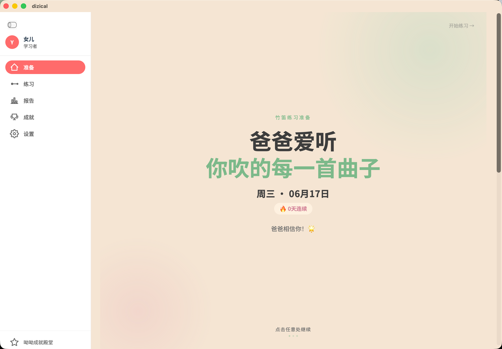
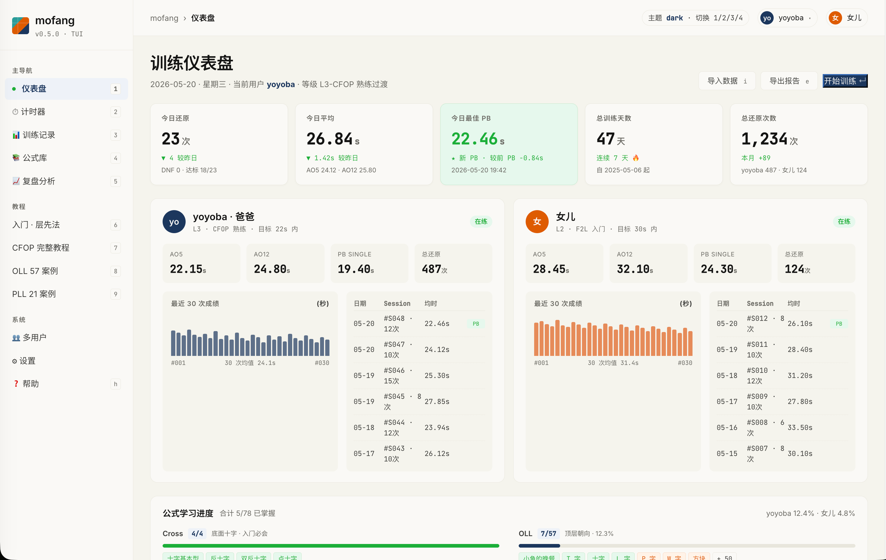
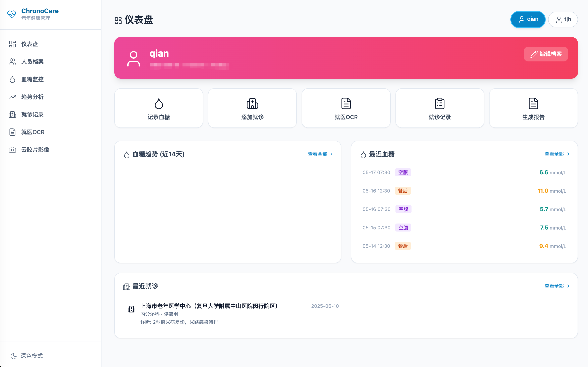
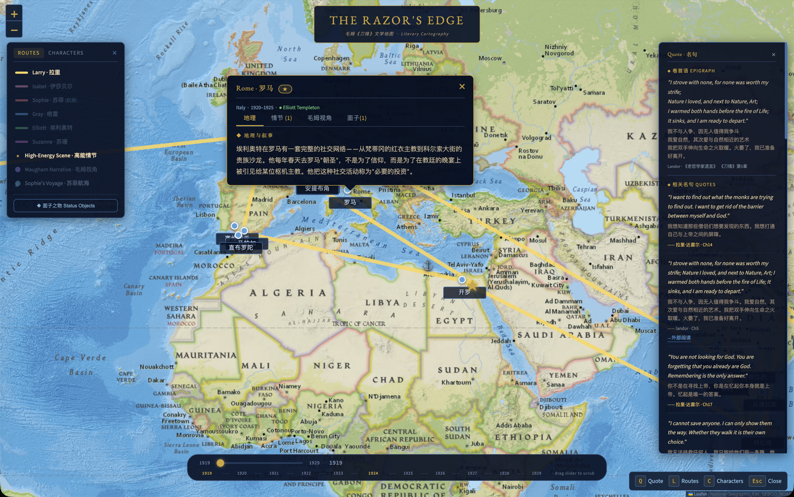
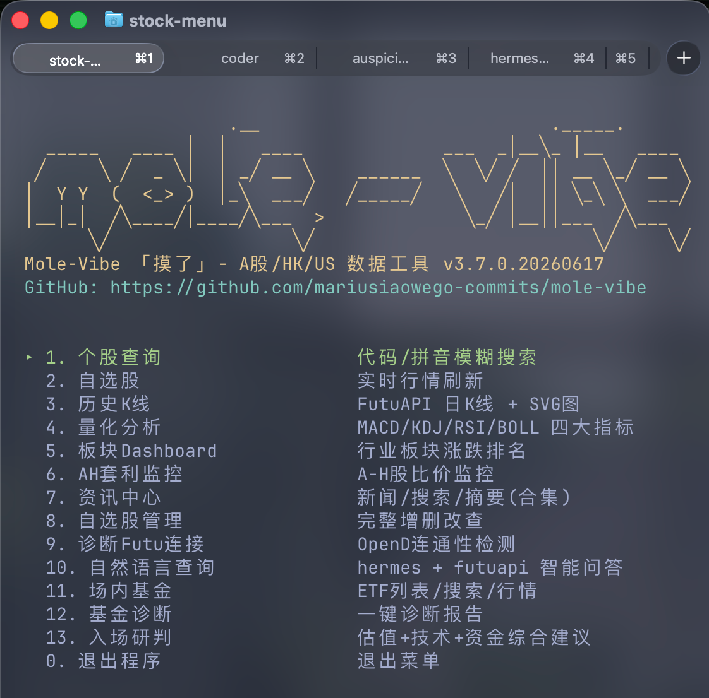
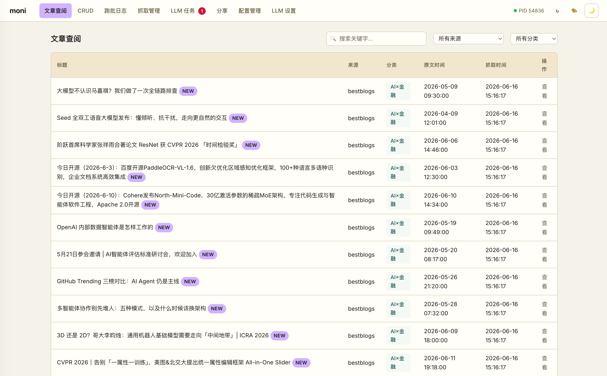
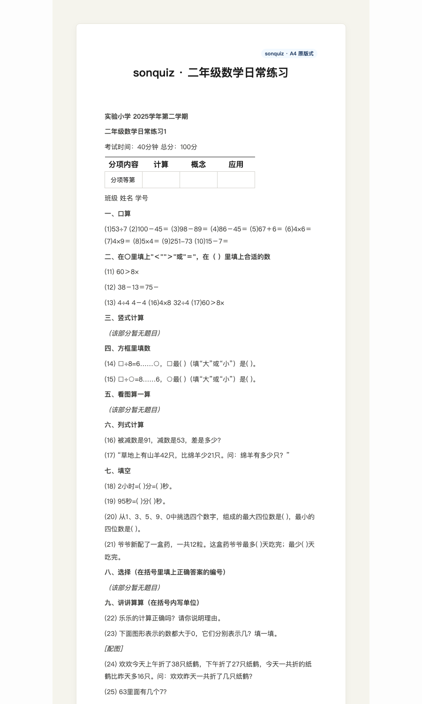
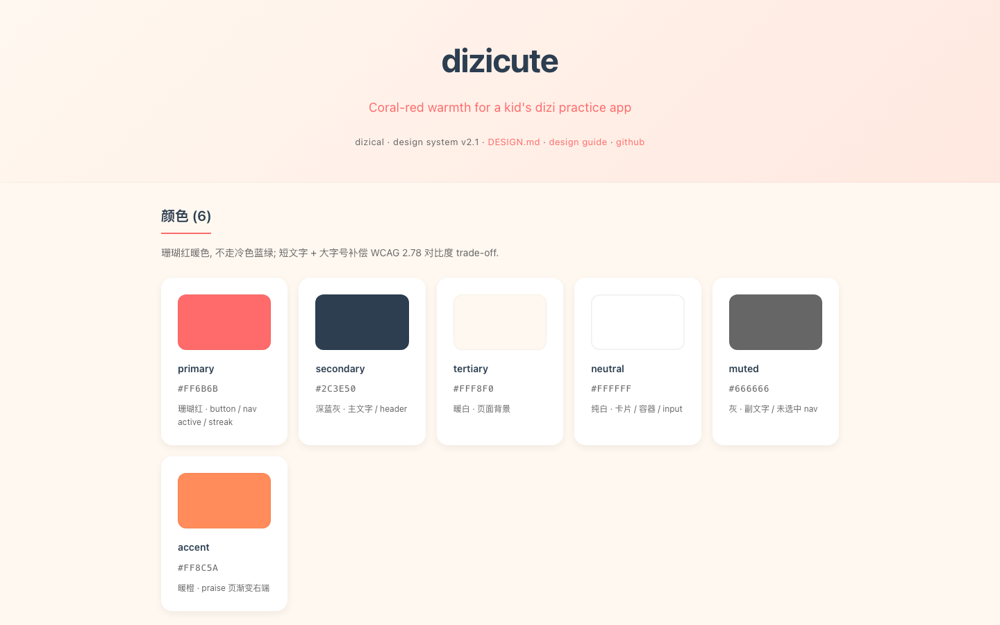
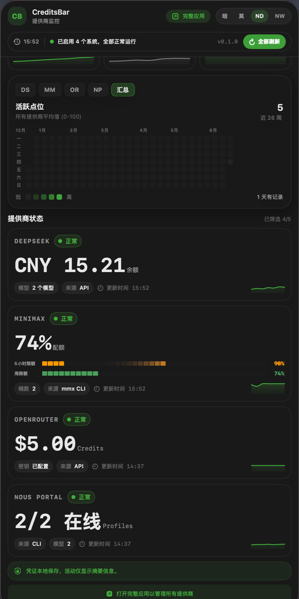

解决自己手头的问题、做给家人用、纯好玩——大部分是工具,有的还在缝缝补补。每一格都真的在用,不是 demo。
笛卡尔说「我思故我在」,dizical 说「我练故笛在」——记录下每次练习的时间,月底自动出图。女儿的竹笛课管家,缴费、练功打卡、月报都在这里。

给女儿做的魔方学练工具,CFOP 教程、多用户、AO5/AO12 统计都有。我俩各跑各的成绩曲线,谁进步快一目了然。

给父母专门定制的健康管理系统。OCR 扫描病历/化验单/处方,落进结构化数据库;LLM 把数据库里那些指标翻成他们能看懂的话;Dashboard 长期盯着趋势看。

读《边城》就去湘西,读《百年孤独》就把马孔多标到南美。深度旅行前的研究工具,把文学里的真实地点落进地图。

工位上低调看一眼股票。A股/港股/美股全市场,接富途 OpenD。在终端里按两下键就查到,窗口一关就消失,看着不张扬。

同业信源自动抓取,落到本地新闻库。给一组关键词,定时拉内容、出研究简报。交行竞品监控一直在跑,周报自动出。

名字里塞了个文字游戏:宋的尾字母 g 和 quiz 的首字母 q 长得一模一样,压进 sonquiz 之后,中间那个 q 既是漏掉的 g,又是 quiz 的开头。出一个对话工具:丢一份教材 PDF,用日常话讲要出什么,自动还原成 Word 原版式。

自己所有项目的 UI/UX 组件都收在这里,自己用过的东西,不是截图。写新页面随用随查,已经攒了 54 个真实系统的设计令牌。

macOS 菜单栏里看 5 个 provider 余额:DeepSeek、OpenRouter、MiniMax、Moonshot、Nous Portal。点开一屏全有,不用挨个登录。API key 进 Keychain,Settings 不回显,日志全 redact。4 套主题可切,Nothing White 我最常用。每日活跃自动落进 UserDefaults,365 天热力图积累中。
